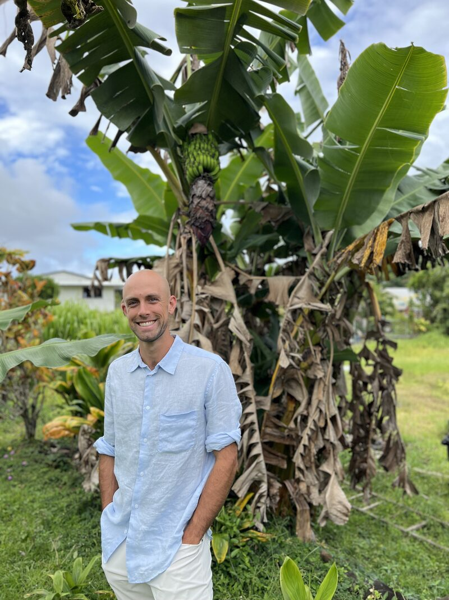
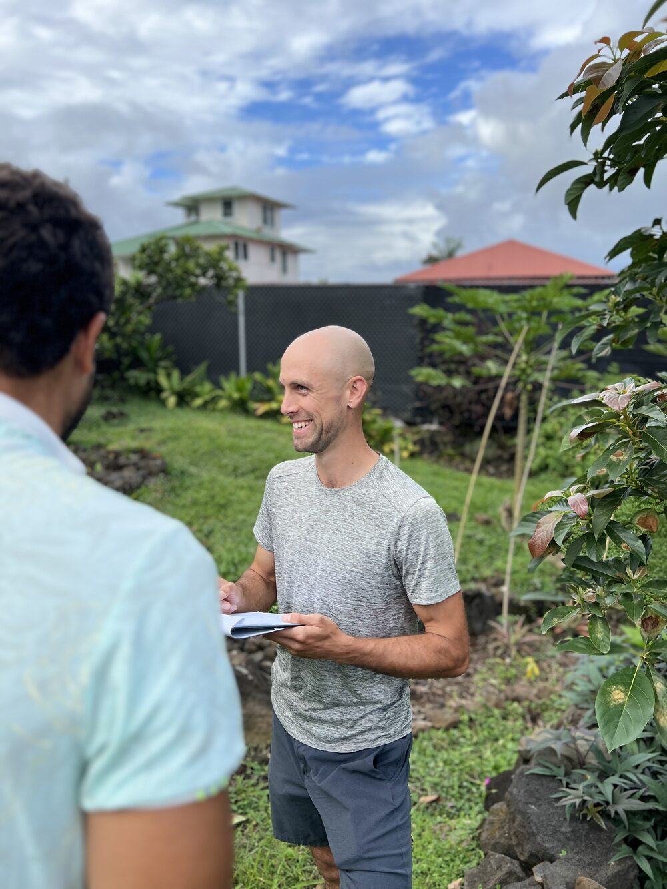
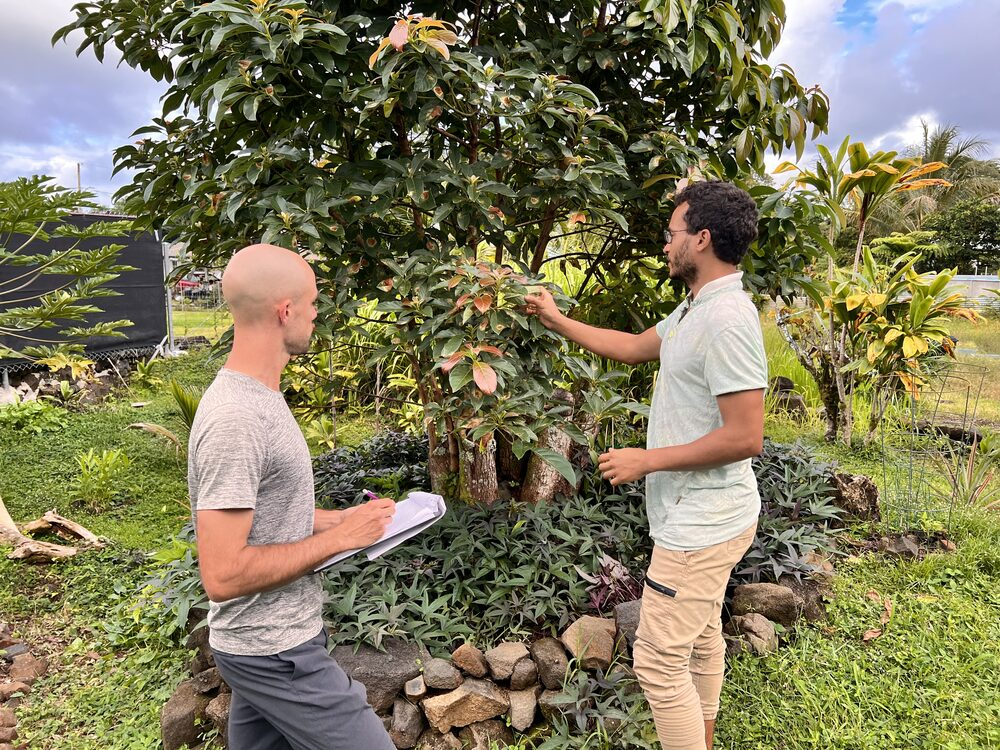
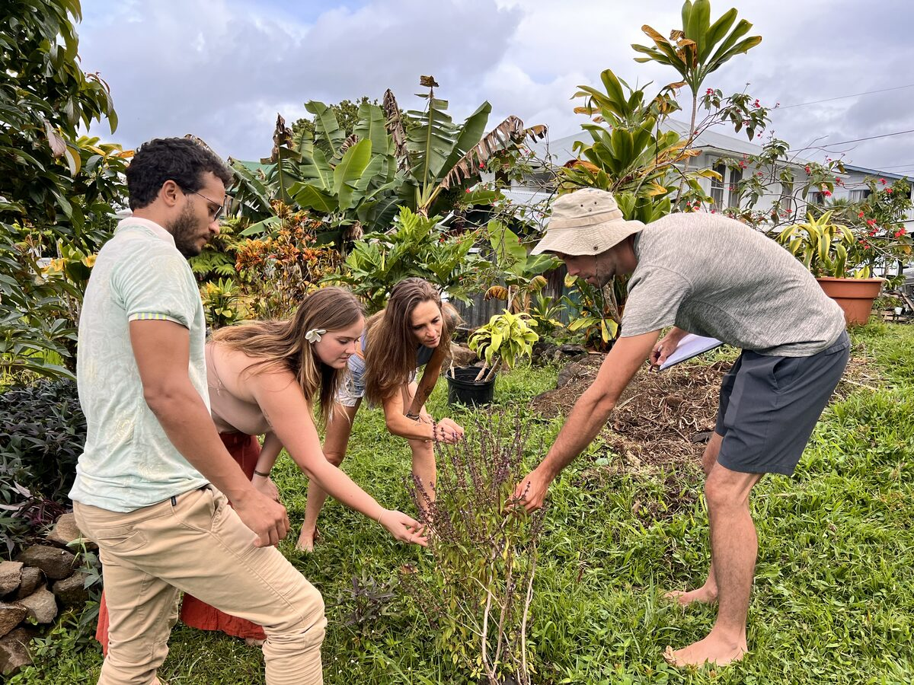
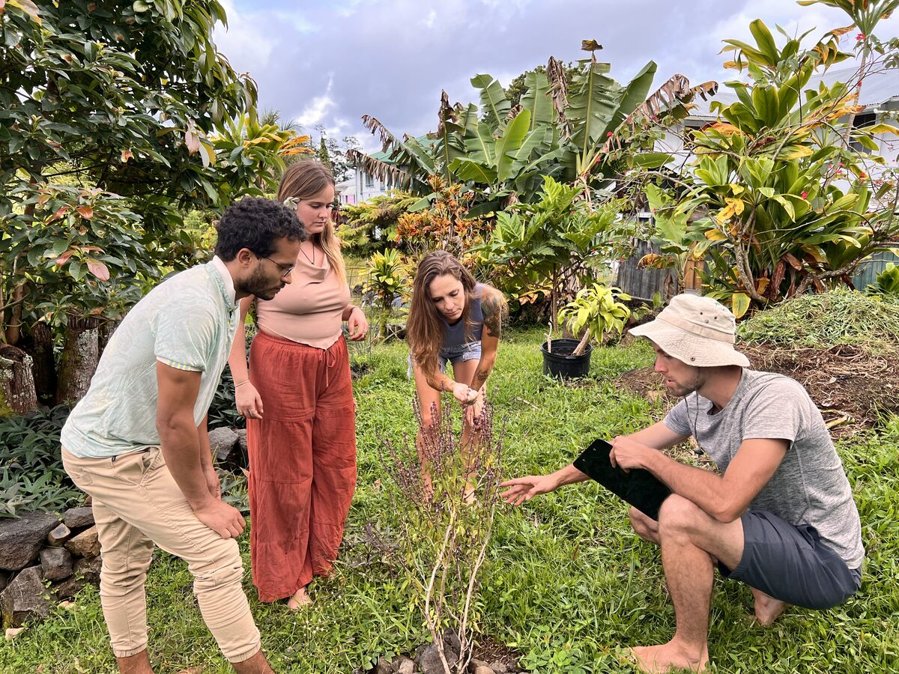

Erik DeGunther is a hands-on edible landscape designer and farm manager based on the Hamakua Coast of Hawaiʻi's Big Island. For the past three years, he's managed eight acres in Papaikou — designing, planting, and maintaining productive food systems that work with the land's natural rhythms rather than against them. During that time, he's also built and maintained many successful projects across the Big Island, helping landowners transform their properties into thriving, productive landscapes.
Erik's approach draws on syntropic agroforestry methods alongside traditional orchard practices, building layered, diversified plantings that support each other the way a natural forest does. The result is systems that are remarkably low-maintenance and efficient once established — healthy soil and thoughtful design do most of the work, reducing inputs and labor while increasing production over time.
As a Pure KNF certified practitioner and board member of the Pure KNF Foundation, Erik applies Korean Natural Farming principles to build biologically active soil without synthetic inputs. For Erik, caring for the soil is more than technique — it's a spiritual practice, a way of honoring the ʻāina and the life it sustains.
A core conviction drives the work: sustainable land practices can be more profitable than conventional, extractive methods. Erik's mission is to develop and refine systems that prove this — tending the ʻāina with care while generating real returns for clients. Whether it's transforming an overgrown half-acre into a thriving edible landscape or designing a scalable agroforestry operation, he brings the same hands-in-the-dirt dedication to every project.
We read the landscape — slope, soil, water, wind — and design systems that thrive naturally in Hawaiʻi's unique environment.
Healthy soil is the foundation of everything. Using Korean Natural Farming inputs, compost, and diverse plantings, we create the conditions for lasting abundance.
Every planting plan stacks functions and maximizes efficiency — productive systems that require less input and less labor as they mature. Sustainable practices that are also profitable.




Ready to transform your land? We'd love to hear about your vision.
Schedule Your Free Consultation